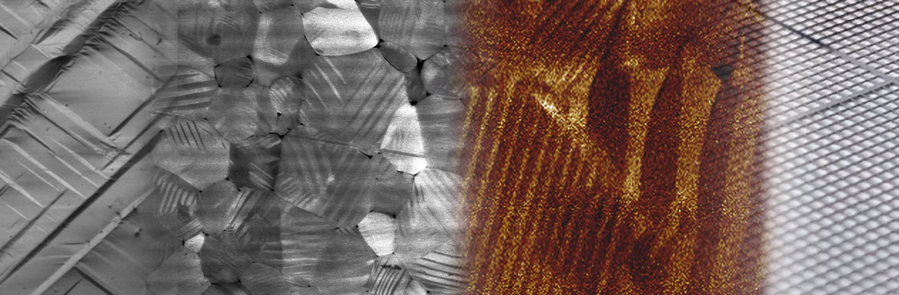
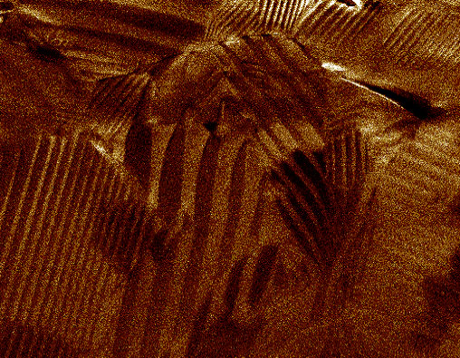
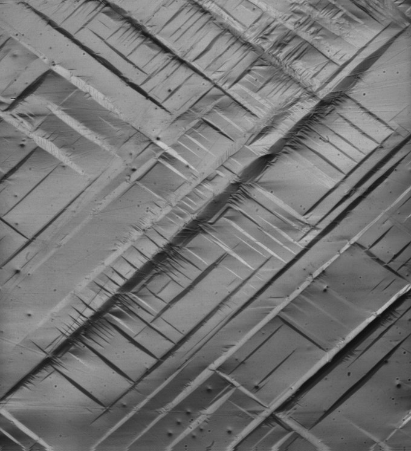

Research
Experimental mechanics at the extremes

We are excited by scientific problems that require us to push the limits of quantitative measurements across length and time scales. We develop specialized experiments for mechanics and multi-physics problems at short time scales. Examples involve miniature Kolsky bars (high strain rate impact), high-speed optical microscopy and interferometry, multi-scale electro-mechanical test beds, and pump-probe acoustic spectroscopy. Current and future directions will extend these capabilities to study transient material response under complex stress states with multi-physical coupling.
Dynamic phase transformations in shape memory alloys

I am developing a new program at the LMS to investigate the kinetics of phase transformations in a wide range of shape memory alloys (SMAs) under large multi-axial stress states and very short time scales. Development of dynamic, high-resolution experiments with multi-physical coupling is ongoing in the lab – with a lot of excitement! We eventually hope to discover the mechanisms behind such complex dynamic phenomena – one direction towards our broad goal of discovering micromechanics of defects under extreme conditions.
Collaborators: Prof. Suraj Ravindran (U. Minnesota)
Wave propagation in microarchitected materials

Architected materials are materials whose properties are designed at a fundamental unit cell length scale, and governed by the arrangement of these unit cells. We are interested in a specific class of such materials whose elastic wave dispersion characteristics may be designed through complex architectures at microscopic length scales. However, the ability to fabricate such materials, and measure their broadband acoustic dispersion characteristics are non-trivial, requiring significant development. We have broken new ground in the fabrication of dense architectures at the micrometer scales, and are now attempting to push the limits of understanding and controlling wave-guiding behavior through multi-scale design and characterization tools developed in house.
Collaborators: Prof. Charles Dorn (U. Washington at Seattle), Prof. Dennis M. Kochmann (ETH Zurich)
Mechanics and multi-physical coupling in ferroelectric materials

Ferroelectrics are a class of electro-active materials, ubiquitous across a wide range of technological applications e.g., energy harvesting, sensors & transducers, nano-electronics and active structures. At the core of these multi-functional applications is the coupling between electrical, mechanical and thermal fields. Microscopically, this manifests as the heterogeneous evolution of volume defects called “domains”, separated by planar defects called “domain walls”. Our efforts focus on understanding these dissipative kinetics, their effects on electro-mechanical switching and dynamic viscolelasticity in ferroelectric ceramics and crystals.
Collaborators: Prof. Dennis M. Kochmann (ETH), Prof. Morgan Trassin (ETH), Dr. Claire Griesbach (ETH)
Plasticity and failure in magnesium alloys at high rates

With a density two-thirds that of aluminium, magnesium is currently sought after as the next-generation light-weight structural metal for a technology-driven, energy-sustainable future. Naturally, many applications of these materials require them to be resilient under impact loading conditions such as, in car crashes, military applications and space exploration. However, the mechanisms of plastic deformation and failure are non-intuitive at time scales on the order of micro-seconds and less. My doctoral research focused on understanding the fundamental mechanisms governing the strength of magnesium and it’s alloys.
Collaborators: Prof. K. T. Ramesh (JHU - PhD advisor), Dr. Meng Zhao (JHU), Dr. Debjoy Mallick (US Army Research Labs), Prof. Todd Hufnagel (JHU), Dr. Andrew Leong (JHU)